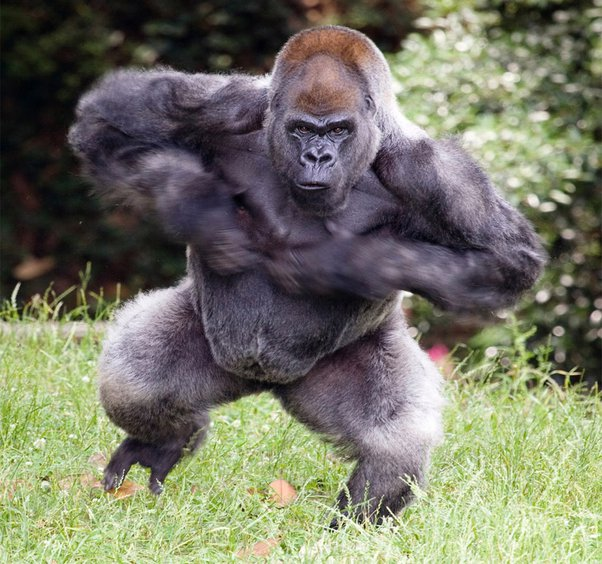

About the Gorilla
The gorilla is the largest living primate and is known for its impressive strength, intelligence, and social behavior. Native to the forests of central Africa, gorillas live in family groups led by a dominant male called a silverback.
Gorillas primarily eat vegetation, including leaves, stems, fruit, and flowers. Despite their size and power, they are generally gentle creatures, spending most of their time foraging and resting.
In the context of our team roster battle, the gorilla represents a powerful challenge, testing the skills and strategies of our team members.